刚上大学的时候看知乎，现在有一年多了。武汉某财经大学计算机专业。在知乎上看过很多学习相关的文章，有一说一，挺有趣。
现在想记录一下自己学习过程中的琐事，供大家玩笑，也给自己留个念。
这个想法的起因：一直对数学建模感兴趣，觉得有趣。自己参加过学校的国赛选拔（没过）；参加了19年的亚太赛，满怀期待，最后是成功参赛。心心念念想拿个奖，在此记录一下自己20年准备国赛的历程，无关其他。
简单说一说我的学习现状：现在2020的1月18，过完寒假大二下。我读书比较菜，GPA3出头，学校里用心读书的人很多，身边的同学都很优秀。大一学的c++，大二刚刚学的java，自己学了Python和matlab。专业课成绩都一般般，到是很感兴趣机器学习，所以有在学吴恩达。
今天学了一点概率统计，还有一点R（R是亚太赛的时候看师兄师姐用，觉得有趣。当时还跟他们学了一点spss和eveiws）
概率刚刚开头，还在纠结P(B|A) 和P(AB) ，也大致知道区别，但是总觉得不是很扎实，也说不出来，另外看了一点随机变量。R学起来怪怪的，有点像Python和matlab的杂交，读取向量长度顺手写了一个len() 过去，之前学语言也没学串过，这个R，有趣。
今天先这样，van安。
————————————————————————
我现在超级激动，因为刚看了一个统计的书，谁能想到我会对着这种书笑出声呢？哈哈哈哈哈哈哈哈哈哈哈哈哈哈哈哈哈哈哈哈哈哈哈哈哈哈哈哈（深井冰. jpg
列举一下：
1.统计研究应该是由问题或者数据驱动的，而不是由模型驱动。
2.数据中的信息由观测值数目及相关变量数目决定。维数是宝贵的资源。
3. 参数模型比算法模型容易解释是伪命题。
4. 参数模型的竞争模型有对立性，机器学习的不同模型有协和性。
5. NMSE小于1，说明模型比不用模型要强，NMSE越小越好；NMSE大于1，则说明这个模型根本是垃圾，不能用。(原话)
6. 提供决策建议而又不说明风险是不负责任的。
先这么多吧。
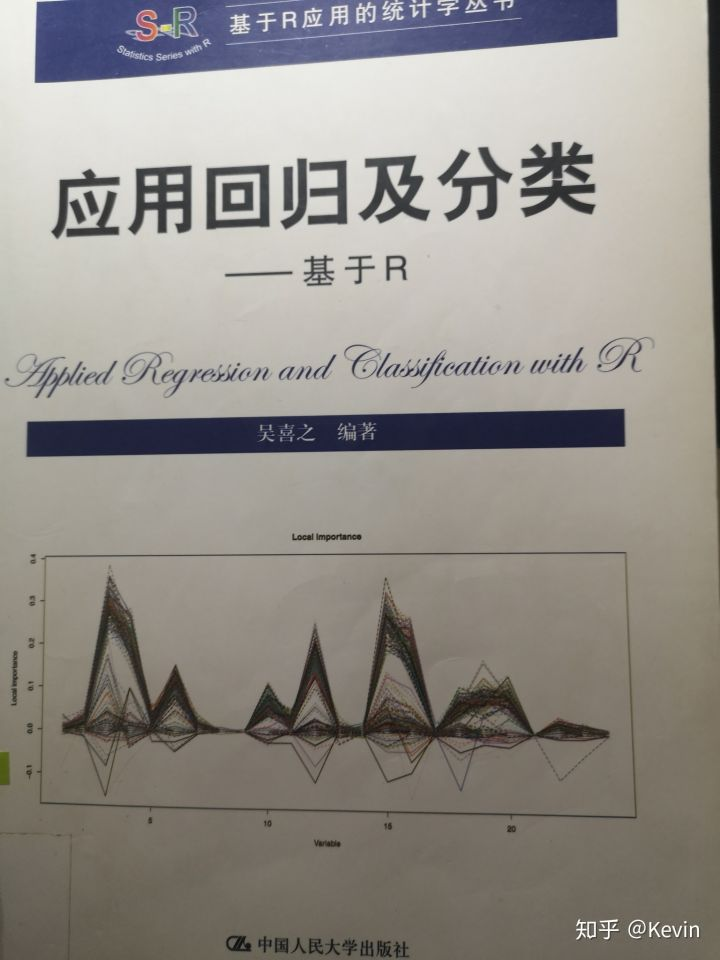
先感谢一下财大图书馆。展示一下这个宝藏，然后我去了解了一下作者。(哈哈哈，我好菜啊，不知道吴先生收不收菜鸡)
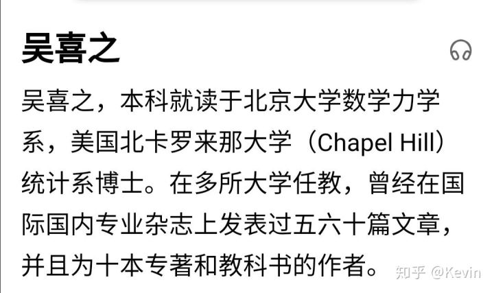
(图片来自百度)
虽然我还没学啥，统计也不是很会 ，接受一下有趣的观点，简直太快乐，下学期要和老师对着干(bushi。关于p值的问题，我看到某公众号的一些推文，说最近科学家联名要求废止p值显著性检验，确实快乐。这个书是16年的，可能p值很早就被质疑了叭。
在看这个书之前，我看的是模式识别。刚离开机器学习，打开统计，以为是那种传(yin)统(he)的书，结果开头就把我头笑掉了。心情实在激动，就先写了吴。
现在说说模式识别(一本正经. jpg
模式识别大概讲的就是一些模式分析的问题。主要说说统计模式识别，基本技术是聚类，判别界面，统计判决。然后看了很多种模式识别的方法，有点像这个学期的操作系统的调度算法。后面一些准则函数的原则，什么最小错分率，最小风险，临近准则，也是像极了先来先服务，短作业优先。还是屈老师那句：没有最好，只有最合适。
另外说说分类器选择。回想起之前打算法比赛，搞模型像是卖大白菜，觉得有趣就跑一跑，炼个丹，最后好不好，准不准，两眼一抹黑。这里大致分成两方面：一是贝叶斯决策，要求得到准确的统计分布知识，包括各个分类的先验概率及类条件概率密度函数；二是几何分类器，不具备准确分布知识可以用，判别函数可以为线性或非线性。
设特征分量个数为n，可分类数目为M。若M=2(n+1) 或者约等于2n，几乎无法用线性分类；若M大于n+1，线性分类不能应用。但是数据有聚类现象，线性分类效果总是良好。突然意识到：统计研究以问题或是数据驱动。(吴爷爷nb
再来说两个有趣的小问题。
1.分界线选择
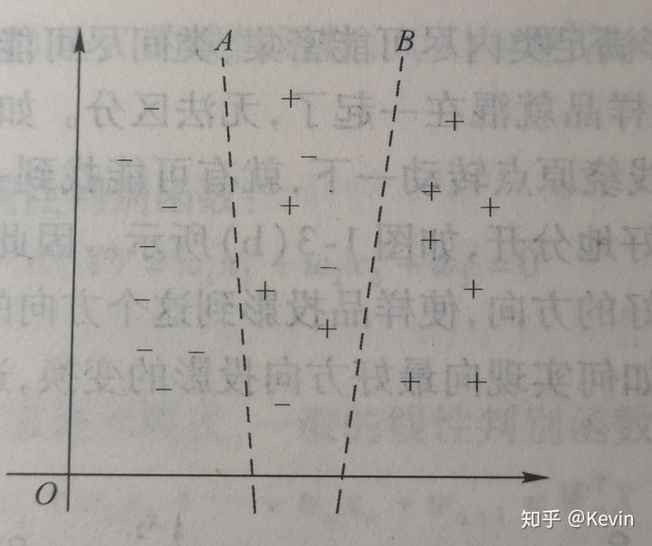
选择方法参照之前说的最小错分，最小风险什么的。
看到这个图，我的第一反应是：可以用两个分界做分类。两侧完整分离，中间给概率(邻近准则) 。第二反应：这不是聚类嘛。加一个维，让中间有第三类特征，分得就很好嘛。虽然和分界线选择问题无关，好像也没什么用，但是又突然想意识到：维数是宝贵的资源。(吴爷爷nb
2. fisher准则
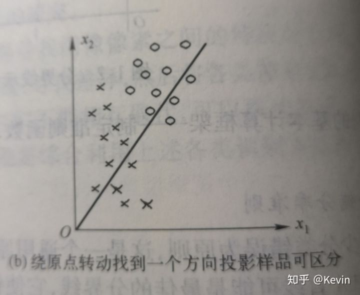
不采用两个参数(y=θX+ω) 直接查找分界线，而是在原点作分界线方向向量的法线向量，训练的时候可以少一个参数。再次突然意识到：我数学好菜，吴爷爷别要我(bushi
今天就这样了，下午出来van，两天居然有1. 7k，我好像知道下学期论文怎么水了(bushi
提前van安(´-ω-`)
————————————————————————
(多图预警)
今天跑出去van，非常开心。
在咖啡店看到这样一张图
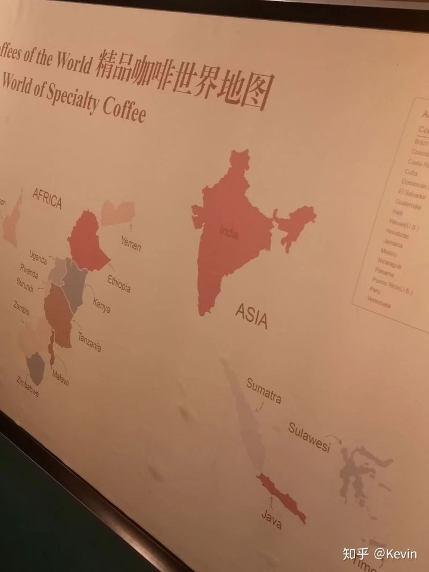
看到那个可爱的爪哇了没，今天的学习记录就围绕爪哇开展(和你想的那个java没有关系
看到它之后，我先是发了个说说，然后想着换个QQ头像，直接po上去觉得不大好，得处理一下。用某图把字扣掉，就这样用了，其实是想搞个边缘检测再做头像，于是有了今天的故事新编。
边缘检测，顾名思义就是检测一下边缘(bushi。这个玩意儿我玩得少，不敢乱下定义，大概就是CV领域里面一个小技术。
之前亚太赛的A题是侦测硅融化轨迹，师姐提到过边缘检测和拓扑找圆，就是找到硅的圆之后，求两图的变换矩阵，连续起来就是运动轨迹。(感觉很有道理，但是我不会
我在matlab里面整了一段代码，用的是Canny算子，这种算子有很多种，原理我讲不来，反正用起来很爽(Han语
一起来康康Canny小朋友的检测结果叭
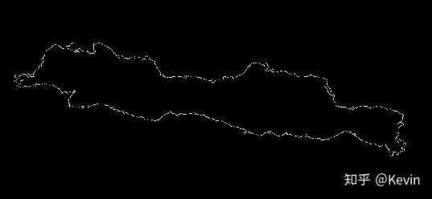
爪哇的轮廓就被Canny小朋友找出来了(可可爱爱
之前的数据算法比赛，大白菜一样的模型都是在matlab里面点出来的(IDE建模，基于这一点，我深信matlab有图像处理的APP。果不其然，我可以胡作非为了(bushi
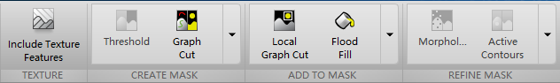
就这。这个APP叫Image Segmenter，图片导进去，再操作一下，可以把轮廓标记出来，二值化导出也很方便。local cut的时候学了一个新词ROI，有道词典：投资回收率(return of investment) （bushi，其实意思是注意区域(region of interest) 。ROI说的是在图像处理时，通过一些算法找到着重处理的位置进行裁剪，随后进行下一步处理。(忽然想到神经网络的注意力
一起康康local cut小朋友的处理结果
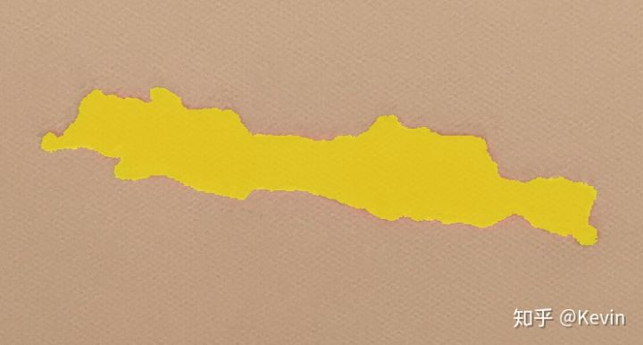
继续探索，点了一个叫include texture features的东西，启动了了5分钟，结果是这样的：
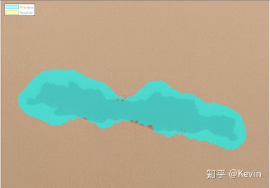
嗯，溢出去了。texture就是肌理纹路，大概是因为图片背景不平滑的原因，所以顺着背景纹路溢出了。(有趣
然后，心血来潮，想感受一下那个A题(当时做的B，经济统计的
首先cut一下，手动调一调
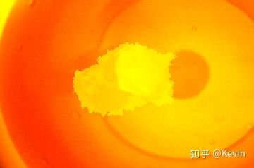
可以看到这个硅还没开始融化，后来换了一张化了的图。
接下来是愉(jian)快(nan)的找圆
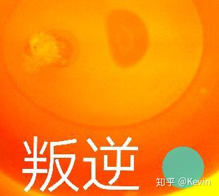
你知道这玩意儿有多可爱嘛<(｀^´)>
就鸡同鸭讲，不知所云。我都不晓得那里有什么神奇东西吸引了它。后来发现是我。。菜(dbq，错怪你了
我把diameter当成半径而不自知(明天背单词. flag
发现了之后，还算行叭。让它找5个圆，最后花了2分多钟找了3个，依然可可爱爱，虽然找歪了，也算它找到一点点。但是2分钟都化成水了好嘛(暴躁. jpg
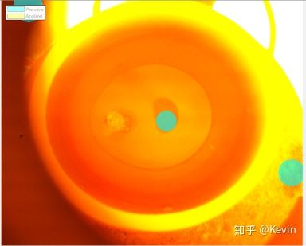
仔细品一品，其实今晚净干些没营养的事。边缘检测的头像不是很好看，找圆找到天上去了。说来说去，毫无技术含量，其实就是在p图抠图(无趣. jpg。现在想想，CV方向也蛮好玩的，一个叫openCV的开源库挺厉害，有机会可以搞一搞。
有那么一点点挫败感，毕竟是p一晚上的图，计算机视觉的门都没摸到。wx支付最新版本的扫一扫变成了全景框，不需要把二维码对准方框了。相机检测到二维码就打个绿点上去，然后就算扫到了。这个真的好快，动态侦测二维码体感上不到1秒的样子，想想我那个2分钟的硅水，就很难受。另外，matlab里面颠来倒去，我完全不知道怎么放到项目里面去，matlab生成c++代码还没玩过，GUI也没做过，lay了。
明天接着搞统计，van安
————————————————————————